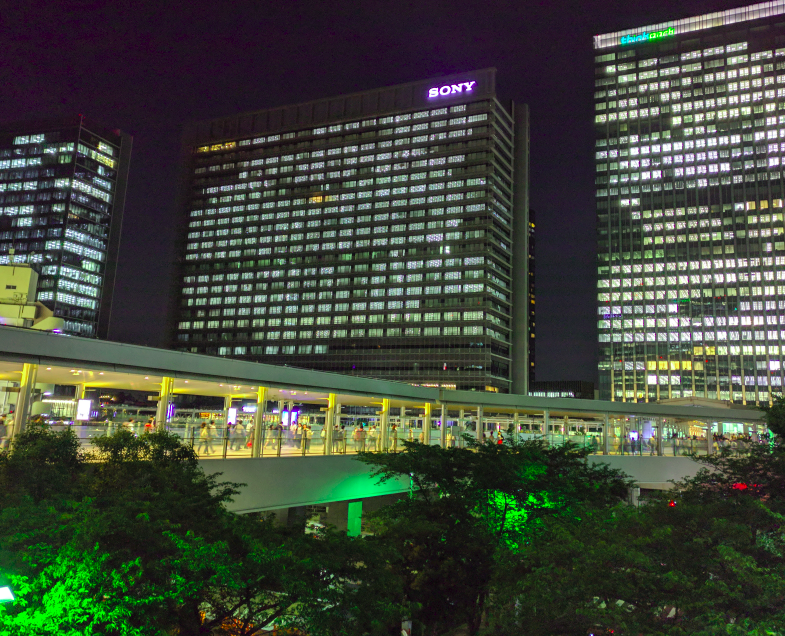
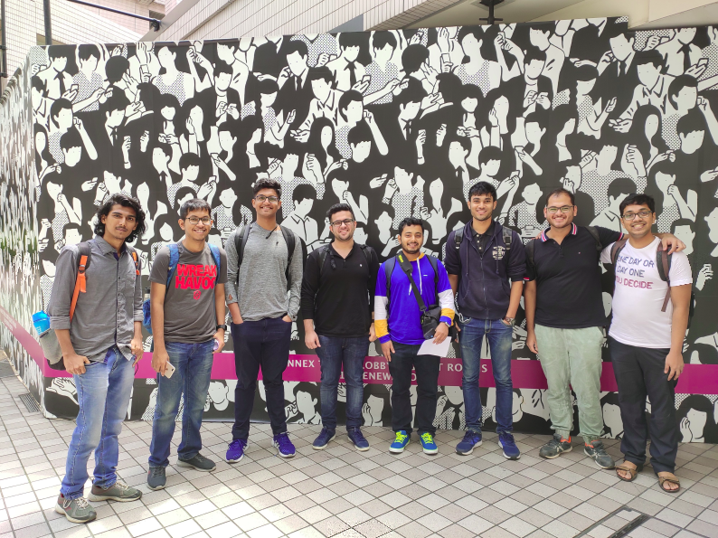
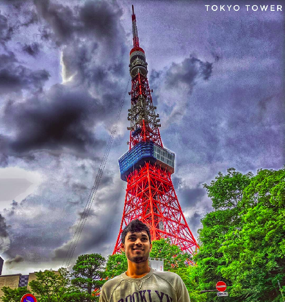
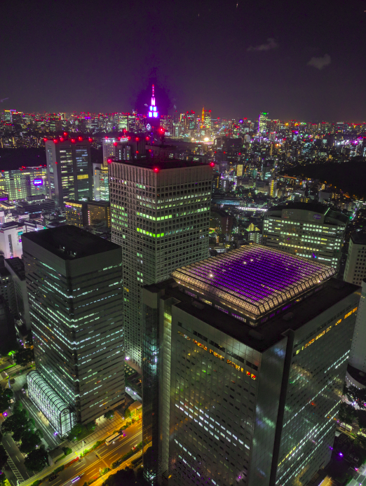
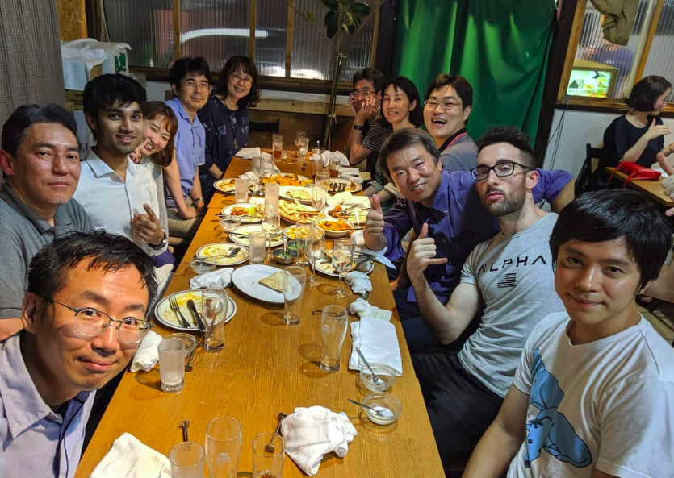

Sony - The Why and How?
At the beginning of the internship season, I was one of those who was clueless as to what I wanted to do ahead in life and so also clueless about what type of internships I should apply for. Luckily, I knew what I didn't want to do for sure and I started from there.

I knew after my DD from IITB, I didn't want to go on and do research or a PhD in any field. I knew I didn't want to study more in life. This straightaway ruled out Univ-interns. Being born and brought up in Mumbai and it being so close to my heart, I knew I didn't want to leave this city and intern or later go on to work in any other Indian city like Benglaru or Gurgaon. This didn't leave me with much options. Also note, being a DD student on its own ruled out a lot of companies for me. My best bet was to try for a company intern with an abroad place of posting. Sony, the first such company to open for an Elec DD student, was naturally my go-to choice. Afterall, who wouldn't like to go to Japan, one of the most technologically advanced and safest countries, birthplace of Pokemon, anime and childhood cartoons like Shinchan and Doraemon which all of us grew up watching. If you are still not sold, just the fact that you would be working in the company that made the PlayStation, something which all of us spent our childhoods using, should be enticing AF.
Now that I knew my so called 'Dream Company', the question was 'HOW?'. It turned out the selection process, similar to other Japanese firms, involved writing Essay type answers(SOP) to 3 questions. On the basis of that, the company would shortlist you for the interview. Sony opened up 7 positions as 7 different IAFs and I signed for the 3 which related best to my profile. I put in some effort, incorporated some valuable advice from seniors and wrote my SOP. There are a lot of points to note while answering these questions, one of them being NOT to use high level English but to just express yourself in the most simple and concise way you can (The Japanese are very poor in English). Out of 180 applications in one of their R&D IAFs, I found a place in the shortlist at the 1st waiting position. The long duration of time between the shortlist and interviews helped me get promoted to the final interview list. The interview was held via Skype, about 25-30mins long, tested my technical knowledge superficially and was mainly HR. I was lucky enough to have done a course project in one of my labs which seemed to resemble the project in that IAF to some extent, which I believe immensely helped the cause.
If you're wondering whether I had parallelly applied for any other internships, then yes, I had done. There was always a huge luck factor involved with Sony and one needed to be realistic rather than playing valiant and going all in for it. Luckily(I say so now), I accidentally missed my Texas Instruments test and I didn't have to face the dilemma of whether to sit for its interviews or to play truant and risk waiting for Sony's interviews that were to be held later. They say, 'Everything that happens, happens for good'.

The Work
After the selection, the Visa and other paperwork was fairly simple and was well assisted by Sony. The 10 week internship started soon, with me sitting on the airplane, both, super excited and with a sense of anticipation and nervousness as to how these 10 long weeks were going to span out.
On my first day as an R&D intern in Sony, I met my mentor, my manager and the team which I was going to work with. They briefly explained me the project and my internship goal, which frankly, seemed extremely daunting to me at first. My humble manager, a 47 year old former national level Baseball player and an avid Pokemon Go fan, trying to speak as much correct English as possible said - "We hire you to start and complete this project for us. We don't know much about it….." Such expectations and belief from just a 3rd year undergrad, less than half the mean age of all the people sitting in the room, left me both terribly anxious and extremely eager to take up this challenge.
The next day, I arrived at my seat at 9:32am, and I was told in the most polite and indirect way ever possible, that I was late by 2 minutes and that I should make efforts to come early tomorrow onwards. The plus side of their this obsession with punctuality was that they would not allow me to work after 6:00pm. Yes, no overtime and no working on weekends...! Because if I did, they would have to legally pay me for the overtime work on an hourly basis. There, that's Japan for you.
My project involved applying Signal Processing and Machine Learning techniques to estimate and measure certain vital characteristics of the most complex and incredible machine - the human body. In the first 2 weeks of the internship, I ended up reading more research papers than I ever thought I would in my entire student life. After gathering sufficient knowledge about the field, I was asked to replicate one of the research papers. The rest of my 8 weeks were spent on coding, testing and improving the results on MATLAB. Concepts and things which I vaguely remembered learning sometime in some course in Insti surely helped. The people in my team were also very approachable, supportive and gave valuable advice now and then. I was supposed to report my work daily to my mentor and on a weekly basis to my team members. Also I was supposed to give a midterm and a final presentation to all my section members mentioning my progress and achievements until that time. Speaking slowly and indicating all the important points on the slides was enough to ensure everyone understood (Remember, the Japanese are very poor in English). In the end, achieving the internship goal turned out to be pretty manageable and my team was pleased with my efforts and my little contribution to their work. This little sense of satisfaction and content on completing the work assigned and fulfilling the trust they put in was simply special.
Tokyo - The City
Tokyo is one of the cities with the highest standard of living and things can get a bit expensive at times. Thankfully, the accommodation and all business travels were covered by Sony and food was the only thing I needed to manage on my own. The entire city is very well connected by a network of metro lines and that is the go-to mode of transportation for 90% of the locals - thanks to the exorbitant cab fares and outrageous parking charges all over the city. That means during peak hours, the trains get as crowded as they do in Mumbai and having to skip 2-3 trains is very normal. Thankfully my office was at a walking distance and was able to escape the crowd more often than not. I found myself switching numerous metro lines and walking at least 15kms on my 'sight-seeing' trips over the weekends.

Perfectly safe to drink tap water and the overly cheap alcohol rates ensured I didn't stay thirsty during the internship. Drinking beer and wine along with meals is a common custom in Japan. Post dinner, it is not surprising to see men dressed in suits and expensive accessories to be lying on footpaths, passed out, with their bags, laptops and mobile phones all over the place. What is surprising is that there is no theft and you can expect to find whatever you forget, exactly where it was, safe and secure. 5-6 year old kids safely go to school alone using public transport. I could enjoy walking through narrow, dark, isolated streets at 3am without any fears. This notion of safety would probably be the thing I miss the most back here in India.

Tokyo is also one of the most populated cities in the world and is home to the busiest metro station, and the busiest street crossing on the planet. On a clear day, the beautiful Mount Fuji, Japan's tallest mountain and an active volcano site, is visible from any of the tall observatories in the city. Pokemon, anime, and robot cafes, vending machines, capsule hotels, temperature controlled electronic toilet seats, bullet trains, etc are somethings simply unique to this country. The 'Kawai' culture, the nightlife and the adorable dogs were something that kept me entertained throughout my stay. In spite of hogging on ramen, sushi, noodles, chocolates all day and having an 8hr desk job, I still somehow magically ended up losing 7kgs in those 10 weeks.
The End
I believe the 3rd year internship is a wonderful opportunity for each student to explore the various fields out there and inspect his/her likes/dislikes. I would urge everyone to put in efforts to get a good intern, where you best think you would like to work later on in life. Sitting through the stressful placements is not something that one would want to happily experience. Securing a PPO through your intern will ease off your final year stress and you can enjoy and explore the Insti life at its best.
That all said, nothing beats living in your own native country and city, and I was as excited to return back to Mumbai as I was to visit Tokyo. The intern didn't only help me gain a lot of valuable knowledge and confidence but also left behind plenty of memories to cherish for a lifetime. Most importantly, it taught me enough Japanese to easily connect with and ask (out) the cute SHIRUCAFE volunteers for coffee :p
